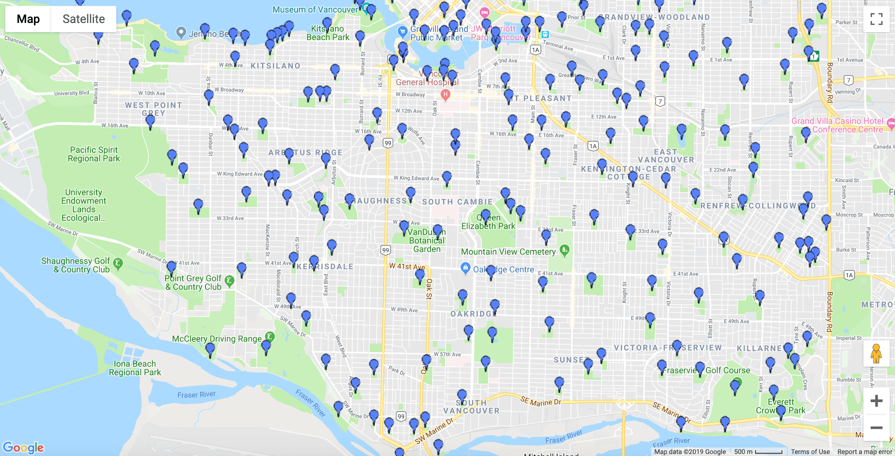
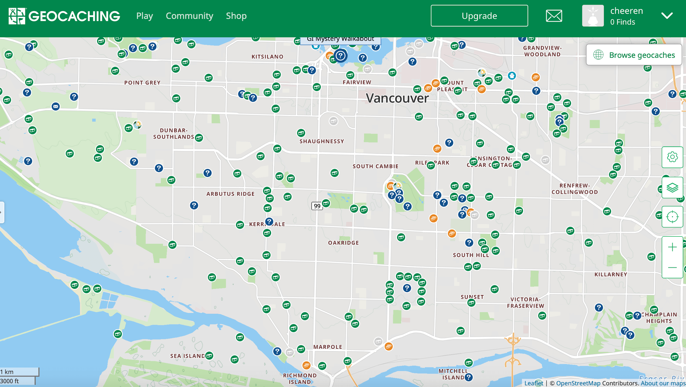
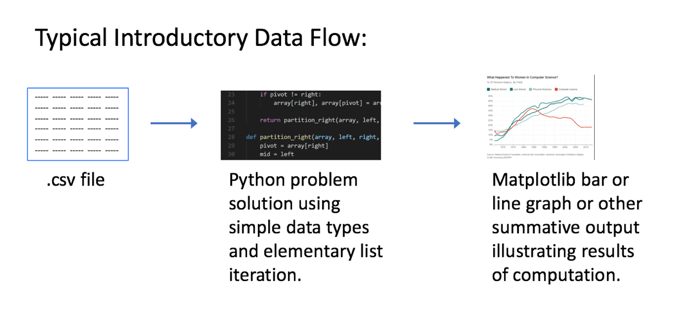
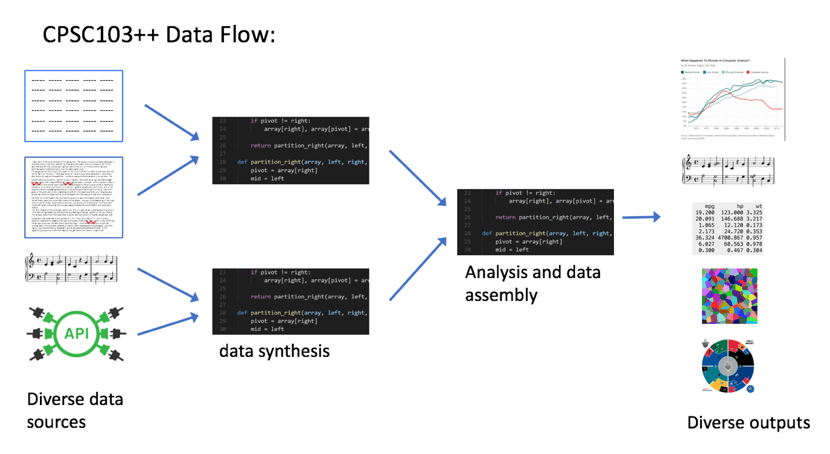

CPSC 203, 2025 W1
October 2, 2025
Overview:


https://vanmapp1.vancouver.ca/gmaps/covmap.htm?map=parks_areas


05:00
Navigate to https://www.billboard.com/charts/hot-100
What happens to the URL if you load a past week? ______
What happens to the page if you substitute a different date into the URL?
________________________________________________
Write one question you would like to ask of this data:
________________________________________________
<!DOCTYPE html>
<html>
<head>
<title>The Dormouse's story</title>
</head>
<body>
<p class="title">
<b>The Dormouse's story</b>
</p>
<p class="story">
Once upon a time there were two little sisters. Their names were
<a href="http://example.com/elsie" class="sister" id="link1">Elsie</a>,
and <a href="http://example.com/lacie" class="sister" id="link2">Lacie</a>,
and they lived at the bottom of a well.
</p>
</body>
</html><div class="chart-list-item piano-content-overlay__gated-item" data-rank="49" data-artist="Taylor Swift" data-title="Lover" data-has-content="true">
<div class="chart-list-item__first-row chart-list-item__cursor-pointer">
<div class="chart-list-item__position chart-list-item__position--centered">
<div class="chart-list-item__rank">49</div>
<div class="chart-list-item__award"></div>
</div>
<div class="chart-list-item__image-wrapper">
<div class="chart-list-item__trend-icon">
<img src="https://assets.billboard.com/assets/1568911107/images/charts/arrow-down.svg?df89925e3b37f64521bd"
srcset="https://assets.billboard.com/assets/1568911107/images/charts/arrow-down-mobile.svg?df89925e3b37f64521bd 30w, https://assets.billboard.com/assets/1568911107/images/charts/arrow-down.svg?df89925e3b37f64521bd 38w"
sizes="(min-width: 768px) 38px, 30px">
</div>
<img src="data:image/png;base64,iVBORw0KGgoAAAANSUhEUgAAAAEAAAABCAYAAAAfFcSJAAAADUlEQVR42mNkYPhfDwAChwGA60e6kgAAAABJRU5ErkJggg=="
data-src="https://charts-static.billboard.com/img/2019/08/taylor-swift-p7u-lover-tuk-53x53.jpg"
data-srcset="https://charts-static.billboard.com/img/2019/08/taylor-swift-p7u-lover-tuk-53x53.jpg 53w, https://charts-static.billboard.com/img/2019/08/taylor-swift-p7u-lover-tuk-106x106.jpg 106w, https://charts-static.billboard.com/img/2019/08/taylor-swift-p7u-lover-tuk-87x87.jpg 87w, https://charts-static.billboard.com/img/2019/08/taylor-swift-p7u-lover-tuk-174x174.jpg 174w"
sizes="(max-width: 767px) 72px, (min-width: 768px) 86px"
class="chart-list-item__image"
alt="Taylor Swift Lover Billboard Hot 100">
</div>
<div class="chart-list-item__text-wrapper">
<div class="chart-list-item__text">
<div class="chart-list-item__title">
<span class="chart-list-item__title-text">
Lover
</span>
</div>
<div class="chart-list-item__artist">
<a href="/music/taylor-swift">
Taylor Swift
</a>
</div>
<div class="chart-list-item__lyrics">
<a href="https://www.billboard.com/articles/news/lyrics/7950218/ready-for-it-taylor-swift-lyrics">
<span class="hidden-mobile show-expanded-mobile-inline">Song </span>Lyrics
</a>
</div>
</div>
</div>
<div class="chart-list-item__chevron-wrapper">
<i class="fa fa-chevron-down"></i>
</div>
</div>
<div class="chart-list-item__extra-info">
<div class="chart-list-item__extra-info-shadow"></div>
<div class="chart-list-item__stats">
<div class="chart-list-item__stats-cell basic-user chart-list-item__stats-cell--first-cell">
<div class="chart-list-item__stats-icon fa fa-arrow-up fa-rotate-45"></div>
<div class="chart-list-item__last-week">23</div>
LAST WEEK
</div>
<div class="chart-list-item__stats-cell basic-user">
<div class="chart-list-item__stats-icon fa fa-arrow-up fa-rotate-45"></div>
<div class="chart-list-item__last-week">10</div>
TWO WEEKS AGO
</div>
<div class="chart-list-item__stats-cell basic-user">
<div class="chart-list-item__stats-icon fa fa-line-chart"></div>
<div class="chart-list-item__weeks-at-one">10</div>
PEAK POSITION
</div>
<div class="chart-list-item__stats-cell basic-user chart-list-item__stats-cell--no-border-right">
<div class="chart-list-item__stats-icon fa fa-clock-o"></div>
<div class="chart-list-item__weeks-on-chart">4</div>
WEEKS ON CHART
</div>
</div>
</div>
</div>Using this page source as data is called scraping a web page.
Simplifies Scraping: Reads the HTML source into a python data structure that’s easy to query!
https://www.crummy.com/software/BeautifulSoup/bs4/doc/
from bs4 import BeautifulSoup
import requests
# assumes requests handled by simple_get function that returns an html document.
html = simple_get("https://www.billboard.com/charts/hot-100" + '/' + date)
soup = BeautifulSoup(html, 'html.parser')
mydivs = soup.findAll("div", {"class": "chart-list-item"}) // all the data is here!!
for div in mydivs:
# assumes we have defined a Song class
s = Song(div.attrs['data-title'], div.attrs['data-artist'], int(div.attrs['data-rank']))
Still very messy! Remedy? https://github.com/guoguo12/billboard-charts
API: Application Programming Interface
Usually a collection of functions you can call from code to allow you to access data contained in a web page.
Documentation for Billboard.py is here: https://pypi.org/project/billboard.py/
Data Structures:
Why pandas instead of python lists?
Vectorized – operations can be applied to entire structures, and chained together.
Many built-in functions that take advantage of a slight difference…
Exploring pandas: